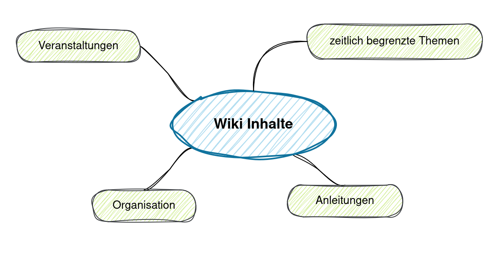

Wissensaustausch im Wandel
Wiki für die Bücherei Nofels
Elisabeth M. Getzner

September 2024
Bilder
Ausgangslage
Unser Team
- Kleine Stadtteilbücherei
- 15 ehrenamtliche Mitarbeiterinnen
- 1-2 Personen pro Dienst
- Zuständigkeiten stark verteilt
Kommunikation & Austausch
- 🗒️ Handschriftliche Notizen
- 💬 WhatsApp-Gruppe
- ✉️ E-Mail (Protokolle, Veranstaltungen)
- 👥 Teamsitzungen (alle 3-4 Monate)
- 🗃️ Anleitungen (gedruckt + digital)
Probleme
- Nicht jede:r hat den selben Wissensstand
- schwer, alle Mitglieder zu erreichen
- Informationen schwer zugänglich
- nur vor Ort
- keine Suche
- Information nicht nachvollziehbar
- von wem, seit wann?
Probleme
- Nicht jede:r hat den selben Wissensstand
- Informationen schwer zugänglich
- Information nicht nachvollziehbar
Ziel des Projekts
- Nicht jede:r hat den selben Wissensstand
- Zentrale Anlaufstelle für Fragen & Anleitungen
- Informationen schwer zugänglich
- Ortsunabhängig & leicht zu durchsuchen
- Information nicht nachvollziehbar
- Änderungen stets nachvollziehbar
Ich hab’s!
Ein Wi(c)ki(e) für die Bücherei Nofels
Was ist ein Wiki?
Website, deren Inhalt von Besucher:innen nicht nur gelesen sondern auch verändert werden kann
Wiki in Organisationen
- Erfahrung & Wissen dokumentieren
- Zugriff auf bereits existierenden Lösungen
- Kollaboration: gemeinsames Arbeiten
- Autor:in 👤 und Zeitpunkt Ⲡersichtlich
Projektplanung
Leitfragen
- 👓 Lesen: Wie können wir Wissen zugänglich machen?
- ✍️ Bearbeiten: Wie können Inhalte vom Team selbst geschrieben werden?
- 🫰 Nutzen: Stehen die Kosten und der Wartungsaufwand in Relation zum Nutzen?
Anforderungen und Erwartungen
- Einfache Bedienung
- übersichtliche Darstellung
- benutzerfreundliche Eingabe
- Arbeit von zu Hause aus
- Benutzerrollen (Schreib- & Leserechte)
- geringe Kosten
- wenig Wartungsaufwand
Ideen für Inhalte
Technische Umsetzung
Technische Landschaft
- existierende Lösungen finden (z.B. Träger)
- Einschränkungen beachten:
- Hosting (Bereitstellung der Software)
- Wartung (Updates, Sicherheitskopien, etc.)
- zusätzliche Kosten
Entscheidung für ein Wiki
- Wiki-Systeme mit Anforderungen vergleichen
- WikiMatrix vergleicht
82 Wiki-Lösungen
- Zwei einfache freie Wikis:
Unsere Entscheidung

Installation
- Hosting beantragen bzw. installieren
- Kosten: €5/Monat
- Inhalte importieren
- sortieren & strukturieren
- Benutzer anlegen
- jede:r hat eigenen Login
- individuelle Schreib- & Leserechte
Ergebnisse
Startseite: die wichtigsten Inhalte und Links auch ohne Login sichtbar

Inhaltsangabe & Navigation
Jahresübersicht 2024: Seiten zur Organisation der Bücherei, Sammelbecken für Arbeiten und Ideen, Sitzungsprotokolle dieses Jahres.
Volltextsuche über alle Inhalte
Bearbeiten mit Vorlage für Sitzungsprotokoll
Nachbereitung
- Mitarbeiter:innen schulen!
- Sichtbarkeit erhöhen
- Weniger Angst vor Fehlern
- Rechte und Benutzer pflegen
- Aktuell halten und verwenden!
Reflexion
Beantwortung der Leitfragen
1. 👓 Lesen
- zentraler, durchsuchbarer Ablageort
- gesteigerte Wertschätzung der Dokumentation
- offene Arbeiten identifiziert
2. ✍️ Bearbeiten
- Schulungen
- einfaches Bearbeiten
- Angst vor Fehlern nehmen:
- Versionierung: Inhalte wiederherstellbar
- “Spielwiese†zum Testen der Eingabe
3. 🫰 Nutzen
- derzeit: Nutzen > Kosten
- Evaluierung nach 1 Jahr
- Alternativen:
- Bibliothekssoftware
- Office Suite
Das habe ich gelernt
- Inhalte & Anforderungen kommen vom Team
- Nutzen muss erklärt und beworben werden
- Es gibt keine perfekten Lösungen!
Es muss kein Wiki sein…
Wichtig ist, sich mit der Dokumentation auseinanderzusetzen!
- fehlende Dokumente ergänzen
- vorhandene Dokumente aktualisieren
- Wissenslücken schließen
Vielen Dank!
Tipps
- technischer Hintergrund ist hilfreich, aber nicht zwingend notwendig
- kostengünstige Möglichkeiten evtl. bereits verfügbar
- Microsoft 365 bzw. Google Docs
- Self-Hosted vs. Hosted:
- evtl. kann Wiki mit Website verbunden werden
- Self-Hosted nur bei hoher technischer Kompetenz
BookStack
Vorteile
- Moderne Oberfläche
- WYSIWYG Editor
- Einfache Struktur
- Seiten
- Bücher
- Regale
Nachteile
- schwerer aufzusetzen / mit existierender Website kombinierbar
- wenig erweiter-/anpassbar
- anfangs etwas unübersichtlich
© Verena Knöpfle